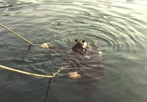
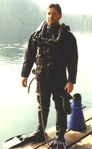

|
|
SUNKEN AIRCRAFT & DCBA - IAIN MIDDLEBROOKc.1964

This piece of equipment is called the DCBA or Damage Control Breathing Apparatus. The idea is it’s a shallow water, up to 50 metres, rapid intervention system, being able to dive via a diving umbilical and also having the ability of two cylinders which are used for bale out.HSM Engineering Technology
Each cylinder is inter-connected through a first stage reducer, it then goes into a second stage reduction regulator and from there down the breathing tube into the diver’s lungs. And on the exhalation side it is balanced with a diaphragm in the middle of the second stage valve; out to ambient.

The advantages are: with a full face mask that you have the ability to communicate with another diver without having to have a communications system. The bite mouthpiece can be merely spat out and you can yell at the diver.It’s a fairly lightweight system as you can see: it enables the rapid intervention of the diver to be able to put the system on, by himself, without any form of help. At the bottom you can see there’s the valve for the on/off control and there’s also the pull, which is pulled for ‘heard to equalise’. On pulling the pin pull, half of the air in the full cylinder is put into the other half-filled cylinder and you have half the duration in your diving cylinder. Once you’ve equalised twice, it’s time to surface.
|
|